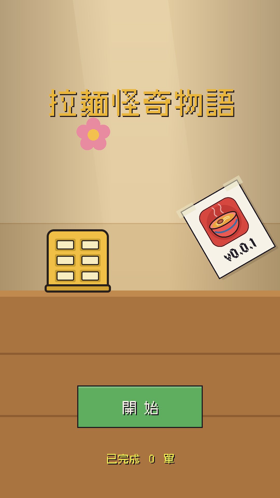
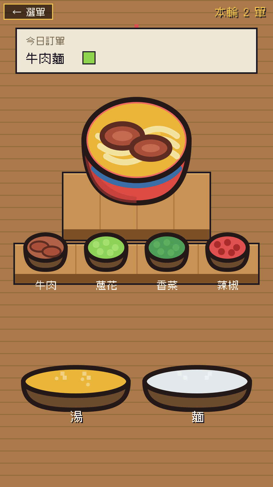
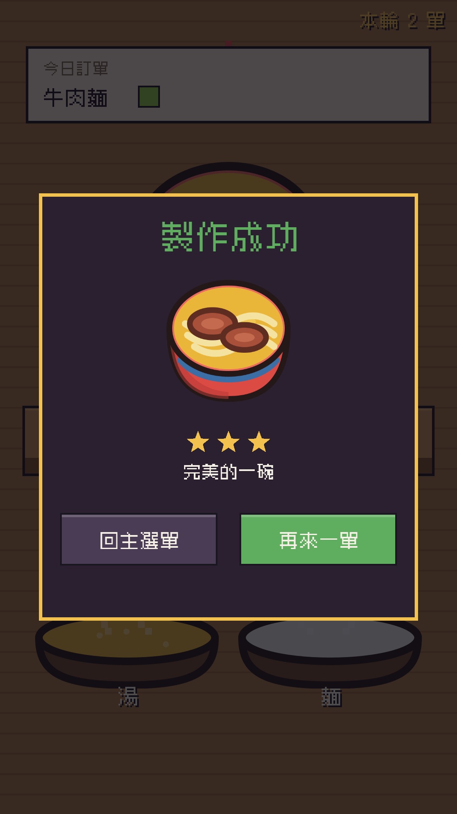

拉麵怪奇物語
深夜手作的解壓拉麵
站在料理台後，從湯鍋舀一勺黃油湯、從麵鍋撈起長長的麵線、灑上客人要的配料——一次只做一碗，做好眼前這碗就好。
Download on theApp StoreApp Store 審核中，即將上架 · iPhone / iPad · 免費
站在料理台後，從湯鍋舀一勺黃油湯、從麵鍋撈起長長的麵線、灑上客人要的配料——一次只做一碗，做好眼前這碗就好。
Download on theApp Store


舀湯、撈麵、灑料，每一下點擊都立刻有回饋與音效，沒有多餘的選單與數值。
不經營、不排隊、不數錢。畫面上永遠只有一張訂單，做對就完成，乾淨俐落。
撈麵的時機決定星級——剛剛好三星，太生或過頭兩星，全局唯一的手感較量。
菜單牆上的版本貼紙與一朵小花都能拖到任意處，擺出自己的店，位置永久存檔。
卡通插圖配點陣繁體字，平滑圖與像素字的對比質感；高 DPI 下曲線依然銳利。
單手直握即玩，純單機離線，不收集任何資料、零追蹤、零廣告。